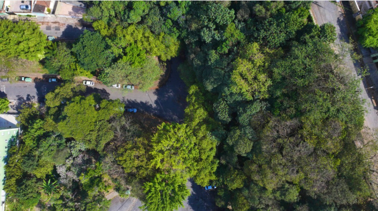

Suspiro
News
Suspiro
News

Imagem: Divulgação / SVMA - Prefeitura de SP
A Secretaria do Verde e do Meio Ambiente (SVMA) de São Paulo registrou um aumento superior a 63% no número de plantios realizados na capital desde a criação da Divisão de Arborização Urbana (DAU), em 2019. O balanço de sete anos do setor foi apresentado em seminário no Centro Cultural São Paulo (CCSP). Atualmente, o município possui mais de 50% de cobertura vegetal, resultado de ações estratégicas de plantio de espécies nativas e campanhas de incentivo à arborização.
Entre os instrumentos de gestão implementados no período, destaca-se o Plano Municipal de Arborização Urbana (PMAU), que estabelece 170 ações para os próximos 20 anos. O planejamento é reforçado pela Lei de Arborização (Lei 17.794/2025), que instituiu novas normas para o manejo, fiscalização e critérios técnicos de plantio na cidade. A legislação prioriza a recuperação da vegetação original e a resiliência climática do ambiente urbano.
Pelo quarto ano consecutivo, São Paulo recebeu a certificação internacional "Tree City – Cidade Amiga da Árvore", concedida pela Arbor Day Foundation e pela FAO/ONU. O reconhecimento atesta a qualidade do manejo sustentável de florestas urbanas e a eficiência dos contratos de manutenção de mudas. Segundo a SVMA, a estruturação técnica do setor permitiu a redução de ilhas de calor e a melhoria dos indicadores de quali dade de vida na capital.
A participação social também integra os pilares da divisão, com campanhas educativas que alcançaram 60 mil usuários em 2025. A população atua na indicação de áreas para novos plantios e no acompanhamento do manejo arbóreo presencialmente. A meta da administração municipal é seguir com a expansão das áreas verdes, utilizando monitoramento permanente e critérios científicos para garantir a sustentabilidade das ações a longo prazo.